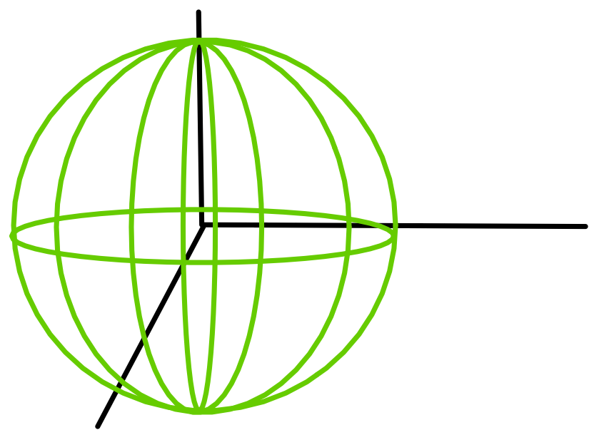
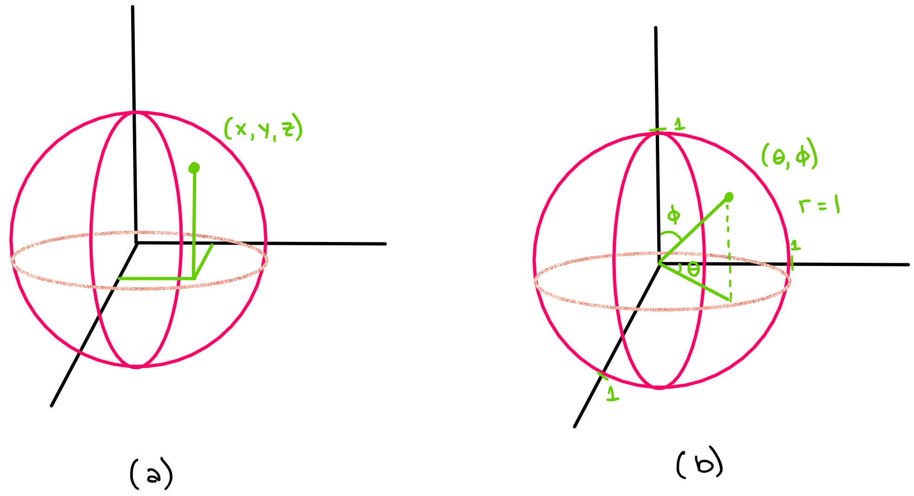
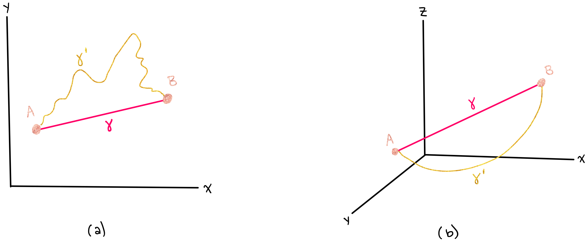
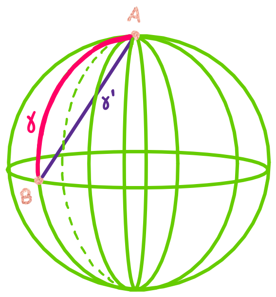
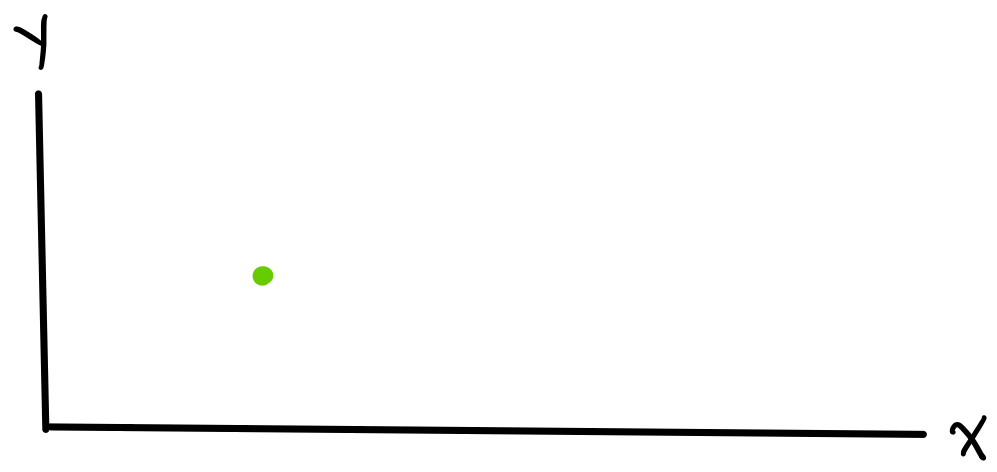
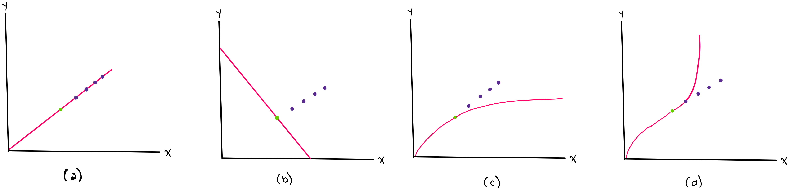
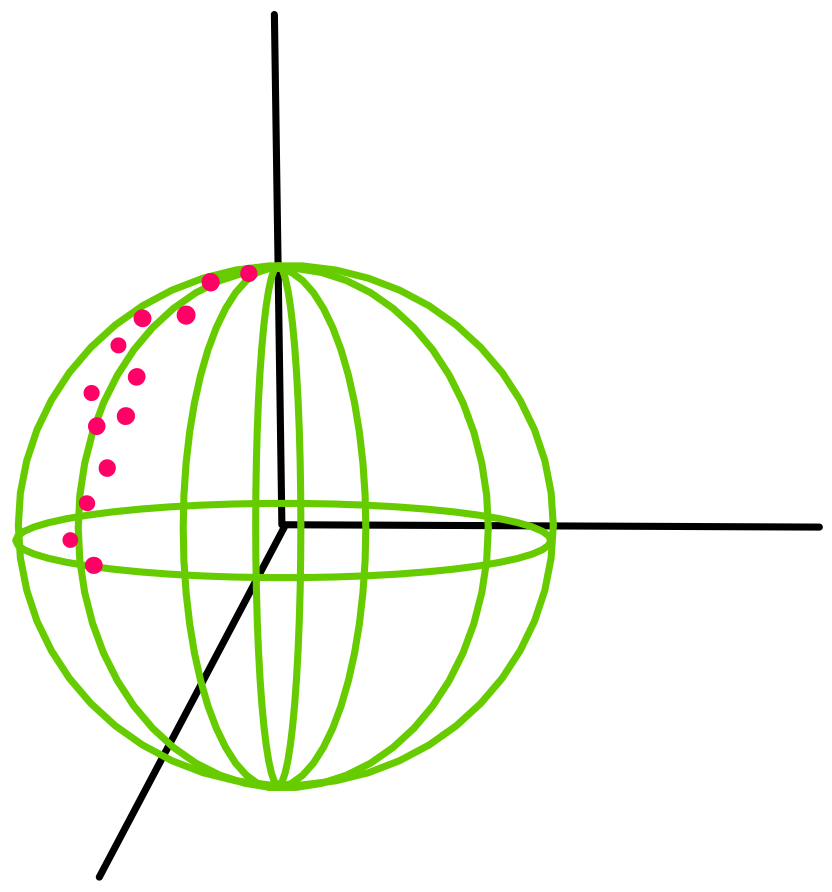
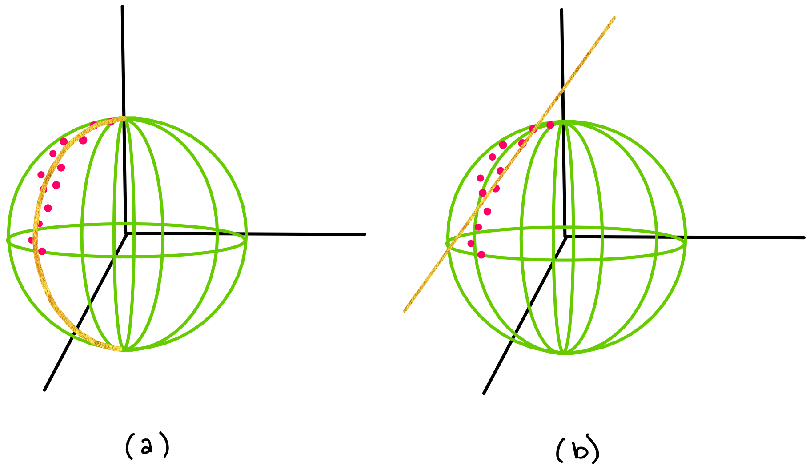
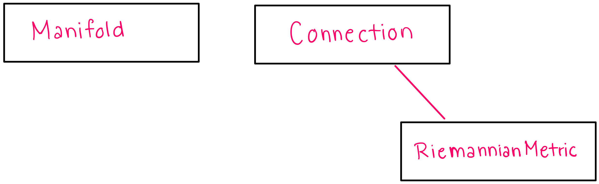

Notebook source code:
notebooks/00_foundations__introduction_to_geomstats.ipynb
Run it yourself on binder

\(\textbf{Lead Author: Adele Myers}\)
Inspired by: Guigui, Miolane, Pennec, 2022. Introduction to Riemannian Geometry and Geometric Statistics: from basic theory to implementation with Geomstats.
Dear Learner,
Welcome. This is a set of notebooks designed to teach you how to use (and hopefully understand) a software package called Geomstats. Geomstats is an open source code that uses concepts from Differential Geometry and Riemannian Geometry to analyze data that lie on manifolds (what it means for “data to lie on a manifold” will be explained in further detail in the next section). Before Geomstats and software packages like it were developed, analyzing data on manifolds could be a difficult task for people without prior knowledge of differential geometry. The Geomstats package aims to make this type of data analysis more accessible to people who do not have prior knowledge of Riemannian geometry. These instructional notebooks work towards Geomstats’ goal to foster accessibility.
For those interested, the following paper [Miolane et al 2020.] compares Geomstats to other software packages like it (on page 5).
What is the motivation for analyzing data on manifolds?#
Many data sets lie on a manifold. The definition of manifold will be introduced later, but for now we can think of a manifold as being something like a surface, such as the surface (2-dimensional sphere) in the figure below.

Analyzing data that lie on manifolds is often possible without Riemannain Geometry, but choosing to analyze data on manifolds is advantageous for three reasons:
Analyzing data on the manifold it lies on allows you to reduce the degrees of freedom of the system, which makes computations less complicated and more intuitive and interpretable.
Knowing the manifold that a data set belongs to will give you a better understanding of the data’s evolution.
Knowing the manifold a data set lives in give you better predictive power and will help you extract the “signal” from a noisy data set or a data set with very few datapoints.
1) Analyzing data on a manifold reduces the degrees of freedom of the system, making computations less complicated.#
The number of \(\textbf{Degrees of Freedom}\) a system has is equivalent to the number of variables needed to describe the system completely. For example, an object moving freely in three dimensions will require three variables to describe it completely \((x,y,z)\); or \((\phi,\theta, r)\) in spherical coordinates- see Figure (a), below. However, if you know that the point lies on the surface of a sphere of known radius, then you would only need to use two variables, \((\theta,\phi)\), to specify its position- see Figure (b), below.
Knowing that the point lies on the surface of a manifold (a sphere) allows us to use fewer variables to record its location, which is computationally more efficient in terms of memory requirements, and less mentally taxing (if you are solving a problem on paper).

Reducing the number of variables is one of the major motivations behind using manifolds to analyze data. Of course, it is sometimes possible to analyze data without manifolds and Riemannian Geometry, but this will be more complicated and computationally intensive.
2) Knowing the manifold that a data set belongs to may give you a deeper understanding of your data’s evolution or “why your data looks/evolves the way it does”#
Objects travelling along a manifold often follow geodesics on that manifold. When the manifold is equipped with a so-called “Riemannian metric” (which will be introduced in a later notebook), we can define geodesics on the manifold. The geodesic is the path of shortest distance that a particle can travel in the space that it is in. For example, geodesics in 2D and 3D space are straight lines are the shortest way to get from one point to another. The figure below shows paths between two points in cartesian space. One path (\(\gamma\)) is a geodesic in cartesian coordinates, and the other path (\(\gamma^{'}\)) is not a geodesic. Figure (a) shows this in 2D, and Figure (b) shows this in 3D.

However, when an object lies in a higher dimensional curved space, its geodesic will not follow a straight line. For example, if an object is constrained to move along the surface of a sphere, the shortest path between points is not a straight line, but rather, a curve. A straight line in 3D space would not lie on the surface of a sphere, so it cannot be the shortest path along the sphere. The figure below shows \(\gamma\), which is a geodesic on the sphere, along with \(\gamma^{'}\), which is not a geodesic on the sphere.

If you did not know that the object was moving along the surface of the sphere, you would wonder why it is taking such an “irratic” path instead of just going straight. The motion of the particles in your system might seem random because you do not understand the space they are moving in. However, if you learn more about the space they are moving in (the surface of a sphere), you would realize that the particles are following very reasonable and predictable paths along geodesics, and this would give you \(\textit{not only}\) a better understanding of how particles have moved in the past but \(\textit{also}\) predictive power to determine how particles will move in the future.
3) Knowing the manifold a data set lives in will help you give you better predictive power and extract the “signal” from a noisy data set or a data set with very few datapoints.#
Let’s begin with a simpler example in cartesian coordinates. Let’s say that you are measuring the position of a car moving at constant velocity, but you dropped your position-measuring-device after only one measurement, and your data looks like this:

How can you get any information from this? It would be very difficult to get information from this if you don’t have an exact model for what the data \(\textit{should}\) look like. Luckily, it is well known that objects moving with constant velocity \(v\) can be modelled by the equation \(x_f = x_i + v\Delta t\), so even though you do not have many data points, you will still be able to accurately predict your car’s future position. However, if you did not know that your data should follow a straight line such as in Figure (c) or Figure (d), or you did not know the car’s velocity v such as in Figure (b), then you might try to fit the data using incorrect models, and your (incorrect) model would not be able to accurately predict the car’s future position.
In the following figure, the green point in each graph shows the single measured point (the car’s only measured position), and the purple points show future points (the car’s future positions). Note that we are only able to accurately predict future points with a correct model.

Similarly, knowing the exact manifold your data lies on can help you analyze your current data points and predict future data. For example, let’s say that your data lives on a 2-dimensional sphere, as shown below.

If you did not know that your data live on the surface of a sphere or you did not, then you might try to fit your data with a line (such as in Figure (b) below) instead of using Geomstats to analyze your data, which appears to follow a geodesic curve on a sphere (shown in Figure (a) below).

\(\textbf{A note about Geomstat's current capabilities:}\)
Our current version of Geomstats cannot tell you \(\textit{which}\) manifold your data lives on, and it also cannot perform “manifold fitting” (adjusting the general parameters of a manifold to fit your data set). For example, Geomstats cannot tell you if your data lives on the surface of a sphere, and if you \(\textit{know}\) that your data falls on the surface of a sphere, Geomstats cannot tell you what the radius of that sphere is.
However, if you \(\textit{know}\) the exact manifold that your data lives on (e.g. you know that your data lives on a sphere of radius R=3), then you can \(\textit{use}\) Geomstats to unlock the predictive power that differential geometry can provide you.
What will you learn in these tutorials?#
Geomstats is designed to be intuitive and user friendly, but having some knowledge about Riemannian Geometry will put you in a good position to understand how to use Geomstats most effectively. Therefore, in the next three notebooks, we will give you an overview of three of the most important parent classes in Geomstats, along with a description of the matematical concepts implemented in each class.
We will cover the parent classes (“parent class” in the sense of object oriented programming) :
Manifold
Connection (and RiemannianMetric)
One instructional notebook will be dedicated to the manifold class, and one notebook will be dedicated to the Connection and RiemannianMetric classes. Connection and RiemannianMetric are grouped into one notebook because RiemannianMetric inherits from Connection.
In each of these notebooks, you should expect to gain an understanding of
the structure/hierarchy of the Geomstats code
how to perform calculations on manifolds
the mathematical theory behind the Geomstats code
# Beginning to build a hierarchical map
Now that we know about these three parent classes, we will begin to draw a hierarchical map of geomstats, which we will build out as we learn more about each parent class.

In the next notebook, we will discuss the Manifold class.